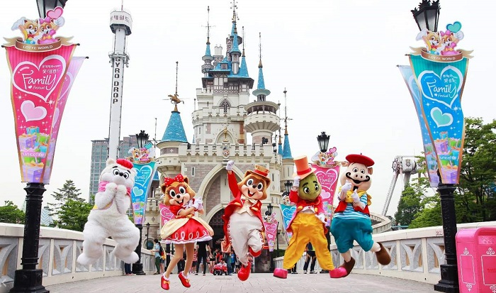

Du lịch Hàn Quốc
Welcome to Korea
Welcome to Korea
Lotte World là một khu giải trí phức hợp sôi động nhất nhì Hàn Quốc với khu giải trí trong nhà lớn nhất thế giới. Ngoài ra, Lotte World còn có một khu giải trí ngoài trời tên Magic Land là hòn đảo nhân tạo nối liền với một trung tâm mua sắm nhộn nhịp. Lotte World còn sở hữu một khách sạn sang trọng, Bảo tàng Dân gian Hàn Quốc, sân chơi thể thao, rạp chiếu phim hiện đại và vô số những điểm giải trí hấp dẫn. Quả thật, Lotte World chính là một khu giải trí đỉnh cao.

Một trong những điều khiến du lịch Hàn Quốc thu hút hàng chục triệu lượt khách quốc tế mỗi năm đó chính là nhờ vào những công viên vui chơi giải trí hàng đầu thế giới. Trong số đó, công viên Lotte World Hàn Quốc nằm tại thủ đô Seoul luôn được xem là một điểm đến không thể bỏ qua đối với bất cứ ai khi có cơ hội ghé thăm xứ củ sâm. Và dưới đây là những kinh nghiệm đi Lotte World bạn cần phải nắm được trước khi khám phá công viên này.
Lotte World là một trong những công viên giải trí nổi tiếng của Hàn Quốc, nằm tại quận Songpa, thủ đô Seoul, cách trung tâm thành phố khoảng gần một tiếng đồng hồ di chuyển. Với tổng diện tích lên đến hơn 130,000 mét vuông, Lotte World Hàn Quốc đã được xác lập kỷ lục Guiness là công viên giải trí trong nhà lớn nhất thế giới vào ngày 12 tháng 7 năm 1989.
Lotte World được chia thành ba khu vực chính là: khu công viên phiêu lưu mạo hiểm trong nhà – Lotte World Adventure, khu vui chơi ngoài trời Magic Island và khu bảo tàng dân tộc.
Mỗi năm, công viên Lotte World Seoul đón khoảng 8 triệu lượt khách du lịch và cũng là công viên duy nhất của Hàn Quốc hiện nay mở cửa đến 23 giờ đêm tất cả các ngày trong năm.
Bước vào bên trong Lotte World Adventure, bạn chắc chắn sẽ phải ngỡ ngàng trước sự rộng lớn và hoành tráng của nó. Nơi đây được xây dựng và thiết kế giống như một thế giới thu nhỏ vậy. Mọi chi tiết từ những con đường, căn nhà đều mang đậm phong cách kiến trúc Châu Âu thời trung cổ tuyệt đẹp. Công viên trong nhà tại Lotte World được chia thành 4 tầng khác nhau, với đủ các trò chơi thú vị và hấp dẫn, dành cho mọi lứa tuổi để bạn có thể trải nghiệm.
Tham gia trò này, bạn sẽ như được hóa thân thành một tên hải tặc Viking thực thụ, di chuyển trên mặt biển nhân tạo với chuyển động rất mạnh, đem tới cho chúng ta cảm giác vô cùng lý thú và phấn khích.
Đến với công viên Lotte World Hàn Quốc, bạn nhất định không được bỏ qua trò chơi này. Ngồi trên một chiếc xe, bạn sẽ được băng qua những con đường mấp mô. Xung quanh là những Kim Tự Tháp và tượng của các hoàng đế Phraoh cổ đại, khiến bạn cảm thấy như được tham gia và một chuyến phiêu lưu đầy thử thách.
Đây là một trò chơi mạo hiểm được rất nhiều bạn trẻ yêu thích tại Lottel World Hàn Quốc. Bạn cùng với 3 người khác sẽ được ngồi vào trong một chiếc thuyền, thả rơi tự do từ trên cao hàng chục mét, lao xuống với vận tốc xé gió trước khi rơi vào bể bơi mát lạnh.
Nếu bạn đến với công viên giải trí Lotte World Hàn Quốc cùng với những đứa con thân yêu của mình thì chắc chắn không thể bỏ qua trò chơi này.
Nếu như khu vui chơi trong nhà thu hút bởi các trò chơi mạo hiểm gay cấn thì khu vui chơi ngoài trời Magic Island lại được xem như một thiên đường của những trò chơi mạo hiểm, đầy thử thách.
Cỗ máy này sẽ đưa bạn lên không trung ở độ cao tương đương tòa nhà 25 tầng rồi rơi tự do xuống từ độ cao hàng trăm mét chỉ trong khoảng chưa đầy 2,5 giây.
Bạn sẽ được ngồi vào bên trong một vòng xoay lớn cùng với khoảng 40 người khác và xoay với vận tốc chóng mặt.
Bạn sẽ được trải nghiệm hết từ cung bậc cảm xúc ngày đến cung bậc cảm xúc khác khi chiếc tàu uốn lượn qua từng khúc cua gấp, rồi lại lao từ trên cao xuống với vận tốc khủng khiếp.
Với công nghệ hiện đại, âm thanh, hình ảnh sống động, khu nhà ma sẽ đưa du khách như lạc vào một thế giới ma mị đầy rùng rợn.
Đến với công viên Lotte World Hàn Quốc mà không ghé thăm khu bảo tàng dân tộc học thì quả là vô cùng đáng tiếc. Đây là nơi lý tưởng để bạn có thể tìm hiểu về văn hóa, lịch sử của đất nước Hàn Quốc trong suốt hàng nghìn năm hình thành và phát triển. Bảo tàng gồm có 3 tầng, chia thành nhiều khu vực khác nhau theo từng chủ đề khác nhau để du khách tiện tham quan.
Giờ mở cửa: Từ 9h30 sáng đến 22h đêm. Riêng thứ 6, thứ 7 và chủ nhật sẽ mở cửa đến 23h đêm.
Là một trong những thiên đường vui chơi giải trí hàng đầu thế giới vì vậy nơi đây luôn thu hút rất đông khách du lịch. Theo kinh nghiệm đi Lotte World Hàn Quốc, bạn nên tránh các ngày cuối tuần. Hãy cố gắng đi vào các ngày thứ 3, thứ 4 và thứ 5 trong tuần. Nên đi từ sáng sớm vì bạn sẽ phải xếp hàng khá lâu mới có thể mua được vé đấy. Còn nếu muốn tiết kiệm chi phí, bạn có thể mua vé sau 16h chiều vì sẽ được giảm giá khoảng 200,000đ.
Cách di chuyển đến công viên Lotte World Hàn Quốc phổ biến nhất được nhiều du khách lựa chọn đó là đi bằng MRT. Bạn có thể bắt tuyến số 2 hoặc số 8, xuống tại trạm Jamsil, đi ra ở cửa số 4 sau đó đi tiếp vài trăm mét nữa sẽ đến thẳng Lotte World.
GỢI Ý TOUR DU LỊCH HÀN QUỐC |
|---|
>> Du Lịch Hàn Quốc: Hà Nội – Seoul – Lotte World – Trượt Tuyết Jangjipine 5 Ngày Trượt Tuyết Bay Jeju Air chỉ với 12.500.000 đồng
|
Top 20 điểm tham quan nhất định phải ghé thăm trong hành trình chinh phục Seoul

Điện thoại: 0903357616
Email: thaontps24690@fpt.edu.vn